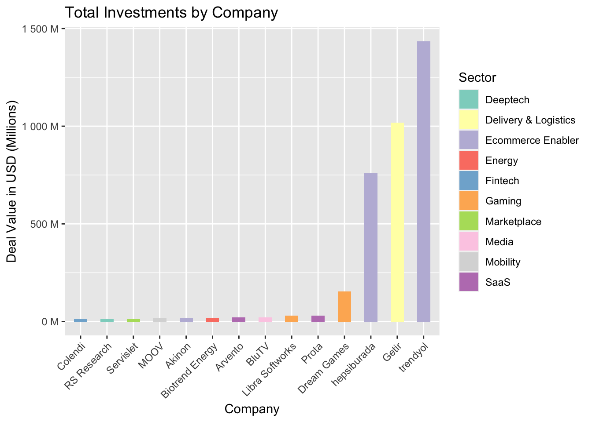
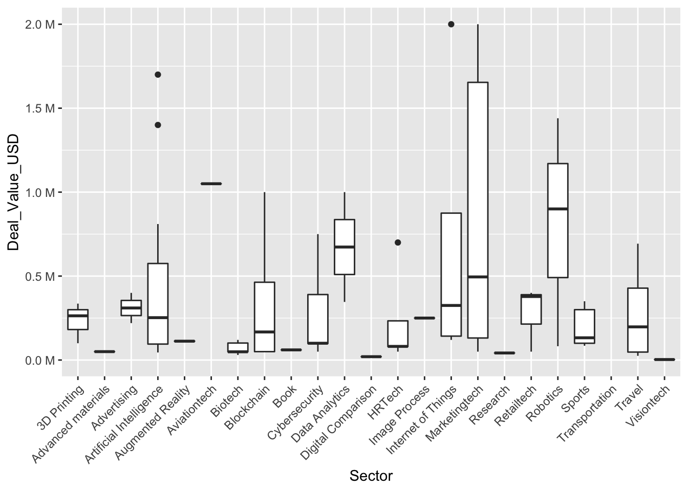

Code
# install.packages("readxl")
# install.package(kni)
library(readxl)
library(knitr)
library(ggplot2)
library(dplyr)
library(scales)
df <- readxl::read_excel("assignment1/startup_deals_2021.xlsx")To be able to take a look at the data set, the necessary libraries and data should be imported first.
# install.packages("readxl")
# install.package(kni)
library(readxl)
library(knitr)
library(ggplot2)
library(dplyr)
library(scales)
df <- readxl::read_excel("assignment1/startup_deals_2021.xlsx")The problematic characters in the column names are removed to make accessing the columns easier. Then we can get a “glimpse” of our data.
names(df) <- gsub("%", "", names(df))
names(df) <- gsub(" ", "_", names(df))
names(df) <- gsub("[()]", "", names(df))
glimpse(df)Rows: 297
Columns: 9
$ Target_Company <chr> "Abonesepeti", "Abrakadabra", "Ace Games", "Adlema…
$ Sector <chr> "SaaS", "Gaming", "Gaming", "Internet of things", …
$ Investor <chr> "Keiretsu Forum, Berkan Burla", "WePlay Ventures",…
$ Announcement_Date <chr> "June 2021", "December 2021", "April 2021", "June …
$ Financial_Investor <chr> "Yes", "Yes", "Yes", "Yes", "Yes", "Yes", "Yes", "…
$ `Investor's_Origin` <chr> "Turkey", "Turkey", "Turkey, USA", "Turkey", "Turk…
$ Stake_ <chr> "5.00%", "5.00%", "NA", "NA", "NA", "NA", "10.92%"…
$ Deal_Value_USD <chr> "100000", "250000", "NA", "120000", "100000", "100…
$ Investment_Stage <chr> "Seed Stage", "Seed Stage", "Seed Stage", "Seed St…It can be seen that the “Stake_” and “Deal_Value_USD” columns appear as strings. That’s not good for business. If we don’t fix this problem, we won’t be able to use our numerical data correctly and get false results.
Let’s start with the “Deal_Value_USD” column. suppressWarnings used to avoid the warnings for the NaN values.
df$"Deal_Value_USD"<- suppressWarnings(as.integer(df$"Deal_Value_USD"))It gets a bit cumbersome when it comes to the “Stake_” column. If we were to change it like we did for the first column, we would get NaNs for the values. We can check the values in the column to investigate this problem.
table(df["Stake_"])Stake_
0.46% 1.33% 10.00% 10.42% 10.65% 10.71 % 10.91 % 10.92% 100.00% 11.00%
1 1 12 1 1 1 1 1 12 2
11.03% 11.11 % 11.55% 12.00% 12.50% 12.61 % 14.06% 14.28% 14.29% 14.30%
1 1 1 1 4 1 1 1 2 1
14.60% 14.71 % 14.91 % 15.00% 15.38% 15.49% 15.50% 15.60% 15.79% 16.13%
1 1 1 1 1 1 1 1 1 2
1750% 18.66% 19.99% 2.00% 2.21 % 2.59% 20.00% 20.83% 22.00% 22.73%
1 1 1 2 1 1 7 1 1 1
23.50% 24.29% 25.00% 25.23% 28.00% 3.33% 3.38% 3.63% 30.00% 33.33%
1 1 2 1 1 2 1 1 1 1
35.00% 35.09% 37.50% 37.70% 4.00% 4.44% 4.75% 5.00% 5.20% 5.67%
1 1 1 1 1 1 1 10 1 1
5.81 % 5.88% 5.90% 50.00% 6.00% 6.25% 6.34% 6.51 % 6.60% 60.00%
1 2 1 3 2 1 1 1 1 4
69.82% 7.00% 7.14% 7.39% 7.50% 7.69% 75.00% 8.05% 8.08% 8.33%
1 1 1 1 1 1 1 1 1 1
8.47% 8.70% 88.89% 9.39% 9.40% 9.91 % NA
2 1 1 1 1 1 157 “%” characters and the white space in some of the cells cause problems. They are removed, and the type is changed. The warnings are suppressed again.
df$"Stake_"<- gsub("%","", df$"Stake_") %>% trimws(df$"Stake_", which = c("both")) %>% as.numeric(df$"Stake_")
glimpse(df)Rows: 297
Columns: 9
$ Target_Company <chr> "Abonesepeti", "Abrakadabra", "Ace Games", "Adlema…
$ Sector <chr> "SaaS", "Gaming", "Gaming", "Internet of things", …
$ Investor <chr> "Keiretsu Forum, Berkan Burla", "WePlay Ventures",…
$ Announcement_Date <chr> "June 2021", "December 2021", "April 2021", "June …
$ Financial_Investor <chr> "Yes", "Yes", "Yes", "Yes", "Yes", "Yes", "Yes", "…
$ `Investor's_Origin` <chr> "Turkey", "Turkey", "Turkey, USA", "Turkey", "Turk…
$ Stake_ <dbl> 5.00, 5.00, NA, NA, NA, NA, 10.92, NA, NA, 15.38, …
$ Deal_Value_USD <int> 100000, 250000, NA, 120000, 100000, 1000000, 25000…
$ Investment_Stage <chr> "Seed Stage", "Seed Stage", "Seed Stage", "Seed St…The amount of investment received by companies can be examined as the first analysis. To do so, we should group the data set by company name and sum the deal values. We can also keep their sector information to observe the distribution.
Adding or removing sectors when grouping by company should not change the row count because a company’s sector should be the same in every record. Yet if we try that, we get different results, which means that there is something wrong in the sector column. Let’s take a closer look.
table(df["Sector"])Sector
3D Printing Advanced materials Advertising
3 1 2
Agritech Artificial intelligence Artificial Intelligence
8 11 3
Augmented Reality Aviationtech B lockchain
2 1 4
Biotech Book Cybersec urity
6 1 1
Cybersecurity Data analytics Data Analytics
4 2 1
Deeptech Delivery & Logistics Diğital Comparison
11 13 1
Ecommerce enabler Ecommerce Enabler Education
8 1 6
Energy Fintech Foodtech
3 23 9
Gaming Healthtech HRTech
51 14 6
I mage process Internet of things Marketingtech
1 5 6
Marketplace Media Mobility
17 12 8
Proptech Research Retailtech
1 1 3
Robotics SaaS Sports
3 28 5
Telecom Telecpm Transportation
3 1 1
Travel Visiontech Vitamins & Supplements
4 1 1 Typos, lower- and upper-case sensitivities, etc. disrupt the pattern. There are also records that show a company in two different sectors. In a larger set, we could remove the whitespace, make every single one of the records lowercase, perform a fuzzy search or similar things, and solve the majority of the problems. But this data set is small enough to make manual adjustments. Let’s change them.
df$Sector[df$Sector == "Artificial intelligence"] <- "Artificial Intelligence"
df$Sector[df$Sector == "B lockchain"] <- "Blockchain"
df$Sector[df$Sector == "Cybersec urity"] <- "Cybersecurity"
df$Sector[df$Sector == "Data analytics"] <- "Data Analytics"
df$Sector[df$Sector == "Diğital Comparison"] <- "Digital Comparison"
df$Sector[df$Sector == "Ecommerce enabler"] <- "Ecommerce Enabler"
df$Sector[df$Sector == "I mage process"] <- "Image Process"
df$Sector[df$Sector == "Internet of things"] <- "Internet of Things"
df$Sector[df$Sector == "Telecpm"] <- "Telecom"
df$Sector[df$Target_Company == "ART Labs"] <- "Artificial Intelligence"
df$Sector[df$Target_Company == "Juphy"] <- "SaaS"Now we are ready to get our new dataframe.
suppressMessages(comp_grouped <- df %>%
group_by(Target_Company, Sector) %>%
summarize(Deal_Value_USD = sum(Deal_Value_USD, na.rm=T))%>%
arrange(desc(Deal_Value_USD)))
kable(head(comp_grouped, 10))| Target_Company | Sector | Deal_Value_USD |
|---|---|---|
| trendyol | Ecommerce Enabler | 1435000000 |
| Getir | Delivery & Logistics | 1018000000 |
| hepsiburada | Ecommerce Enabler | 761481000 |
| Dream Games | Gaming | 155000050 |
| Libra Softworks | Gaming | 30000000 |
| Prota | SaaS | 30000000 |
| BluTV | Media | 20800000 |
| Arvento | SaaS | 20565000 |
| Akinon | Ecommerce Enabler | 20000000 |
| Biotrend Energy | Energy | 20000000 |
We can also visualize these companies and compare them.
Visualizing so many companies will make the plot unreadable. We can just select the top 5% and feed them to our plot.
We first calculate the value for the filter, then add it to the code, and then we sort the bars according to the values. Next, we insert the elements of the plot. Note that the y axis is in millions.
qu <- quantile(comp_grouped$Deal_Value_USD, probs = 0.95, na.rm = TRUE)
comp_grouped %>% filter(Deal_Value_USD >= qu) %>%
ggplot(aes(x = reorder(Target_Company, +Deal_Value_USD),y = Deal_Value_USD,
fill = Sector))+ scale_fill_brewer(palette="Set3") +
geom_col(width = 0.5) + theme(axis.text.x = element_text(angle = 45, hjust=1)) +
ggtitle("Total Investments by Company") +
xlab("Company") + ylab("Deal Value in USD (Millions)") +
scale_y_continuous(labels = label_number(suffix = " M", scale = 1e-6))
Three companies that are arguably similar lead the way, with significant differences between their closest competitors. Despite being in the same sector, hepsiburada and trendyol are both in the top 3, which emphasize the share of the Ecommerce sector.
When it comes to sectors, we can work on similar calculations.
A group by function will be needed again. To see more information, we will also include the number of companies in the sector.
sum_deal = sum(df$Deal_Value_USD, na.rm = T)
sec_grouped <- df %>%
group_by(Sector) %>%
summarize(Deal_Value_USD = sum(Deal_Value_USD, na.rm=T), Amount_of_Company = n_distinct(Target_Company))%>%
arrange(desc(Deal_Value_USD)) %>%
mutate(Investment_Percentage = round(Deal_Value_USD*100 / sum_deal, 2))
kable(head(sec_grouped, 10))| Sector | Deal_Value_USD | Amount_of_Company | Investment_Percentage |
|---|---|---|---|
| Ecommerce Enabler | 2221235634 | 8 | 58.78 |
| Delivery & Logistics | 1027811561 | 10 | 27.20 |
| Gaming | 221235284 | 50 | 5.85 |
| SaaS | 84157048 | 26 | 2.23 |
| Fintech | 28894578 | 23 | 0.76 |
| Marketplace | 26477315 | 15 | 0.70 |
| Mobility | 25905560 | 8 | 0.69 |
| Media | 21759000 | 10 | 0.58 |
| Energy | 21608314 | 3 | 0.57 |
| Deeptech | 16357491 | 10 | 0.43 |
Ecommerce Enabler companies got more than half of the investments, even when there were only eight of them! Great, let’s start a company called “hepsiburalarda” and be done with it, right? right? Well, not quite.
We should investigate how these investments are distributed among companies and collect descriptive statistics on them. There is a plot for such tasks: the boxplot. But almost every sector has its own extreme outliers, and if we were to plot these, we would have to filter several sectors for a readable graph.
filtered_df <- df %>%
filter(!Sector %in% c("Ecommerce Enabler", "Delivery & Logistics", "Gaming",
"SaaS", "Fintech", "Marketplace", "Mobility", "Media",
"Energy", "Telecom", "Deeptech", "Education",
"Agritech", "Proptech", "Vitamins & Supplements",
"Foodtech", "Healthtech"))
ggplot(filtered_df, aes(x=Sector, y=Deal_Value_USD)) +
geom_boxplot() + scale_y_continuous(labels = label_number(suffix = " M", scale = 1e-6)) + theme(axis.text.x = element_text(angle = 45, hjust=1))
So, the boxplot did not come to our aid this time. We will calculate the descriptive statistics instead. Sectors with only one sample are excluded.
summed_df <- df %>%
group_by(Sector) %>%
summarize(Mean = mean(Deal_Value_USD, na.rm =TRUE),
Median = median(Deal_Value_USD, na.rm =TRUE),
Standard_Dev = sd(Deal_Value_USD, na.rm =TRUE),
Min = min(Deal_Value_USD, na.rm =TRUE),
Quantile1 = quantile(Deal_Value_USD, 0.25, na.rm =TRUE),
Quantile3 = quantile(Deal_Value_USD, 0.75, na.rm =TRUE),
Max = max(Deal_Value_USD,na.rm =TRUE),
Amount_of_Company = n_distinct(Target_Company)) %>%
filter(,!is.na(Standard_Dev)) %>%
mutate(Coefficient_of_Variation = Standard_Dev / Mean) %>%
arrange(desc(Median))
kable(head(summed_df))| Sector | Mean | Median | Standard_Dev | Min | Quantile1 | Quantile3 | Max | Amount_of_Company | Coefficient_of_Variation |
|---|---|---|---|---|---|---|---|---|---|
| Telecom | 3085875.0 | 1546750 | 4303515.8 | 50000 | 82625.0 | 4550000 | 9.200e+06 | 4 | 1.3945853 |
| Energy | 7202771.3 | 1400000 | 11098730.8 | 208314 | 804157.0 | 10700000 | 2.000e+07 | 3 | 1.5408973 |
| Ecommerce Enabler | 246803959.3 | 1103361 | 511282193.7 | 50000 | 376800.0 | 20000000 | 1.435e+09 | 8 | 2.0716126 |
| Delivery & Logistics | 79062427.8 | 1000000 | 166933603.5 | 55000 | 365264.0 | 35000000 | 5.550e+08 | 10 | 2.1114151 |
| Mobility | 3700794.3 | 1000000 | 5707703.7 | 139400 | 383080.0 | 4000000 | 1.600e+07 | 8 | 1.5422915 |
| Robotics | 807422.3 | 900000 | 683584.4 | 82267 | 491133.5 | 1170000 | 1.440e+06 | 3 | 0.8466256 |
This was the final step of our EDA. We ran fundamental analyses on such an exciting data set.